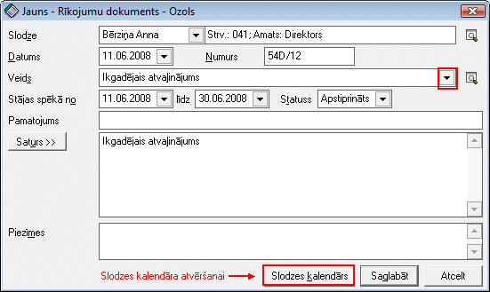

Rīkojumu dokuments¶
Lai strādājošā algu aprēķinā aprēķinātu, piemēram, atvaļinājuma naudu, kā arī pieņemtu/atlaistu darbiniekuvai izpildītu citas darbības, kas veic izmaiņas strādājošā slodzes kalendārā, jāveido rīkojuma dokumenti.
Rīkojumu dokumentu saraksts atrodas Rīkojumu dokumentu žurnālā . Pievienojot jaunu strādājošo, pirmais rīkojums par pieņemšanu darbā tiek aizpildīts slodzes ievades formā. Pēc slodzes saglabāšanas šis rīkojums tiek saglabāts Rīkojumu žurnālā , un, lai šis rīkojums piedalītos algu aprēķinos, tas Rīkojumu žurnālā obligāti jāapstiprina.
Lai pievienotu jaunu rīkojumu, rīku joslā jānospiež poga .. image:: images_ozols/25605.png
- scale
100%
(Alt+P):
{kind=link}
Slodze: strādājošais kuram tiek pievienots rīkojums;
Datums: datums, kurā iesniegts rīkojums;
Veids: rīkojuma veids (ar podziņu

tiek atvērts rīkojuma veidu saraksts);
Stājies spēkā no_ līdz_ : rīkojuma stāšanaš spēkā datums;
Statuss: rīkojuma statuss;
Pamatojums: iespējams nodefinēt pamatojumu;
Saturs>>: iespējams pievienot rīkojuma saturu.
Lai rīkojumu saglabātu, jānospiež poga.. image:: images_ozols/25621.png
- scale
100%
.
Lai rīkojumu izdrukātu, rīku joslā jānospiež poga .. image:: images_ozols/24944.png
- scale
100%
(Ctrl+P).
Rīkojuma veids nosaka vai un kāds kods tiks piemērots strādājošajam ziņojumā par darbinieku kustību. Rīkojuma veida konfigurācija nosaka, kādi darba laika uzskaites dati tiks pievienoti slodzes kalendāram. No rīkojuma var atvērt
{kind=link}
, kā arī ja Rīkojuma veids ir “Pieņemšana darbā”, no Rīkojuma dokumenta loga iespējams atvērt arī
{kind=link}
.